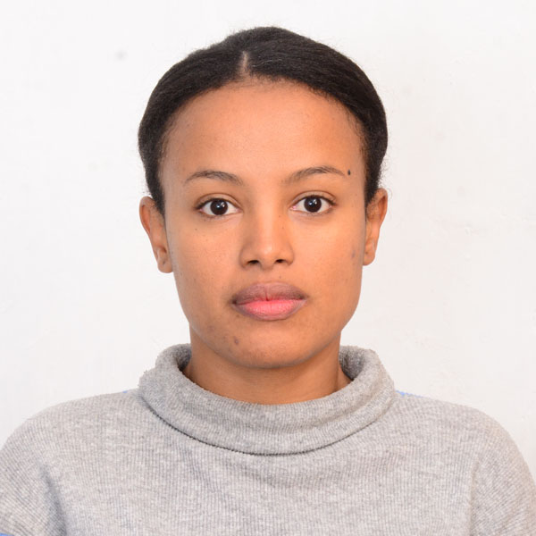

My Resume

Contact detail
Objective Statement
I seek challenging opportunities where I can fully use my skills for the success of the organization.
Education
- Computer Engineering degree from AASTU
- Yirgalem Highschool from grade 9-12
- Mekaneyesus School from grade 1-8
Work Experience
- Template maker at Everest Apparel from 2019-2020
- making template with Rich Peace software
- Repairing template when broken
- making cloth patterns
- Network Administrator at Snnpr Youth and Sport Bureau from 2021-2023
- Troubleshooting computer network problem
- Installing and configuring network
- Manage network servers technology tools
Skills
- Computer hardware maintainance
- Install and configure servers
- My sql
- Adobe Photoshop
- Network installation